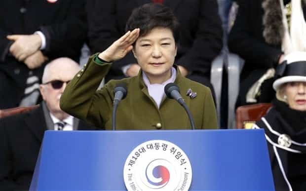

< < < Back
South Korea’s Draft Dodging Female President Tries To Play War Using Male-Only Conscripts – Return Of Kings
According to some analysts, North and South Korea are this week closer to real war than almost any other time since 1953. American troops stationed in the South, who number more than most countries’ entire militaries, have been mobilized locally after North Korea declared a “quasi-state of war”. The two Koreas have technically been at war for 65 years, having only ever signed a truce, not a peace treaty. Yet recent developments are creating real concern in Seoul, Washington and elsewhere, especially with artillery being fired by both sides.
Seeking to bolster her “leadership credentials,” President Park Geun-hye has appeared on television with senior military commanders, dressed in combat fatigues. As the privileged daughter of South Korea’s influential dictator, General Park Chung-hee, Park owes so much to her illustrious family name. Quainter still is the image of a woman trying to command a formidable martial force of more than half a million active soldiers, the backbone of which depends on male-only conscripts.
I have a personal attachment to South Korea and aside from my countrywomen, Germans and Poles, Korean is the most common nationality of the girls I have been with. The West undoubtedly has so much to learn from the more culturally proud and sophisticated East Asian nations and it is regrettable that feminism has allowed Park Geun-hye to ever walk the corridors of power when those corridors wholly depend on male martial sacrifice.
Meet the world’s most powerful draft dodger

It’s funny how they call her South Korea’s first female President and not its first draft dodger.
President Park dodged the draft, not because of any unmet legal requirements, but because she is female. No woman is compelled to serve in the South Korean military, nor were women forced to in Park’s youth. The irony of this is truly staggering. With a nuclear-armed state led by Kim Jong-un above the 38th parallel, South Koreans (and their female President) generally sleep peacefully because their brothers, sons, and boyfriends are on watch for them.
I am not advocating for compulsory military qualifications in order to be a head of state or government. What I am arguing for, by contrast, is common sense. If all men of Park’s generation were required to serve and women were not, no female of that age cohort should be allowed to ever lead South Korea or run for public office. They have absolutely zero knowledge of what it means to involuntarily serve and defend their country in a manner that millions of others, all men, do.
By chance (or good fortune, depending on your perspective), some generations in different countries will never be forcibly enlisted to serve their country, let alone fight in a conflict zone. Elevation to the highest offices is acceptable if you either did the duty foisted on all able-bodied members of an entire gender or generation, or if your age group was not one of those made to serve. Obvious exceptions or grey areas, like severe disability or the partial US Vietnam War draft, would exist, but they would be few and far between.
Feminists only recognize “gender differences” arguments where such differences benefit women

I bet Obama congratulated Park on being a “gender warrior” for women’s progress. Try to suppress your laughter as you note the irony.
From South Korea to the East Coast of America, and truly everywhere beyond, feminists are hard at work arguing for “equality” as they simultaneously handpick those areas they want privileges in. The purported “misogyny” of East Asian cultures (or Asian cultures in general) is seen around the world as an impediment to “women’s progress.”
Meanwhile, South Korean and other women enjoy the privileges attached to not being conscripted. There is no interruption to their work life and schooling, and they get the additional benefits of a flurry of measures to encourage “female participation” in multiple workplace and other arenas.
Their male relatives and friends are paid about US$100 per month for the rigors of a brutal “tutelage” in the art (and science) of war. Though necessary to acclimatize these young men to what would be an intensely savage showdown with the perpetually militarized North, it undermines any idea that women get the short end of the straw in South Korean society. The responsibilities are all on South Korean men, as is the increasing Western-style guilt for their role in creating the “patriarchy” that supposedly oppresses their wives, girlfriends, mothers, sisters and daughters.
Some who commented on a previous conscription article of mine about Finland tended to assume I want women conscripted. Like then, however, my purpose now is to identify the inherent hypocrisy of feminists and indeed millions of women. Intensive civilian service is a definite option for women to get off their backsides and assist their country. But the first task is locating the double standards and juxtaposing them with the fake rhetoric of feminism.
Check your privilege, Park Geun-hye

No woman should be allowed to seek public office in South Korea without two years of full-time, laborious service for their country.
When she was elected, Park Geun-hye promised a “zero-tolerance” approach to provocations from Pyongyang. That’s an easy statement to make when you never did any serving or fighting yourself, even as you watched every male your age march off to a barracks. Park is probably the most privileged female leader of the past half-century, and there have been many with extraordinary privilege during that time.
As much as political dynasties love to keep power in the family, I cannot help but think that General Park is turning in his grave, wondering how someone as martially unqualified as his daughter could ever be allowed to lead South Korea.
This is, after all, a nation that must constantly calculate as to whether to send its millions of sons into the inferno of battle against the world’s most bellicose regime.
Read More: The Case Is Building Against South Korean Women